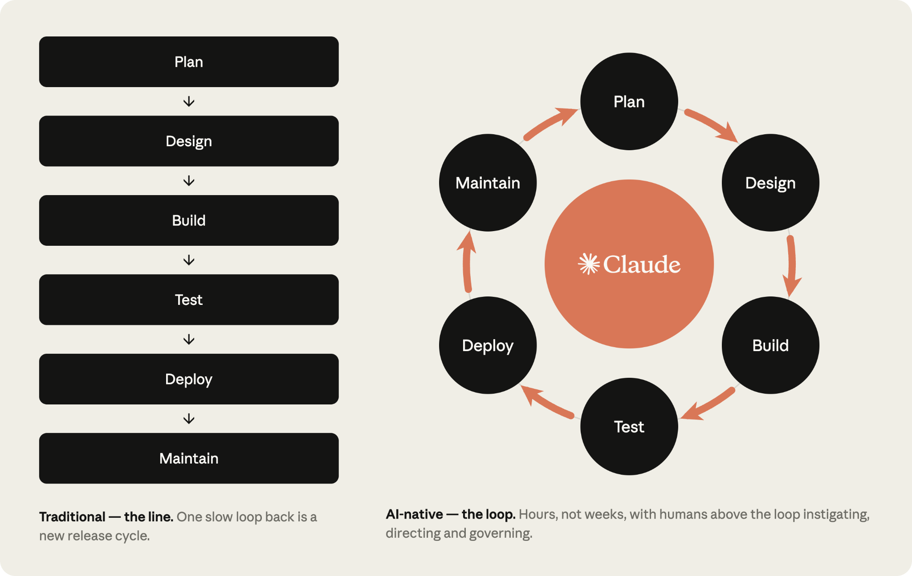

1 · 意图漂移
以为对齐了，做出的不是想要的
布鲁克斯要的是一个脑子里的概念完整性。人和 agent 之间最常见的炸法，是双方都以为对齐了。mattpocock/skills 把这记成失败模式 #1：沟通缺口要到成品出现才暴露。grilling 怎么修，留给下一课。
Lesson 0001
这节课先把失败模式摆平。方法论在补洞，不是在立新宗教。后来有人把这些洞叫 plan / review / deploy，这里先不按那套分。
人月不可互换，概念完整性比功能堆满更值钱，也没有能消灭本质复杂度的银弹。
布鲁克斯这三句并不是为 agent 写的，但正好挡住三种常见幻觉：多开几个 agent 不等于多了几个可互换人月；生成速度上去了，不等于「系统是什么」已经有一个脑子想清楚；工具能削偶发复杂度，打不掉需求、边界和概念结构本身的难度。本库的《人月神话》导读把这三句接到了今天。
这三句挡住的是「系统要长成什么样」的判断。生成速度起来之后，组织侧也把这件事说了同一句话；下面三节先把语言认下来，再回到那五个洞。
SDLC，Software Development Life Cycle，软件开发生命周期。一句话：把从需求到上线、再到退役的全过程切成固定阶段、按顺序走一遍的标准化清单。后面那两张图和那五个洞，都按这张清单铺。
不同的 SDLC 模型（瀑布、敏捷、螺旋、V 模型）给阶段起不一样的名字、设不一样的门，但绕不开的几件事是固定的：先想清楚要做什么，再设计怎么搞，再写代码，再验证，再上线，再维护。
这一课不需要分清这些模型。只需要记住一件事：所有 SDLC 模型都默认「写代码」是最慢的那一段，于是阶段之间的闸门、签字、评审全按写代码的速度设置。下面两张图就是这件事的两个角度。


code is no longer the bottleneck，不是「不用写代码」，是「控制代码的闸门成了新瓶颈」。
blog 全文很长，后半段都在讲 hooks / skills / 持续评估之类的实现细节；这一课只取前半段还站得住的几条，撑起后面五个洞的组织语言：
这六条不展开成工具目录。判断一门方法论有用没用，看它补的是这六条里的哪几条；下面五个洞就是这六条的现场版。
「业界问题」和「agent 编程问题」在这里是同一张表。左边是组织给洞起的名字，右边是写代码的人看见的炸法。不要读成两节重复。

1 · 意图漂移
布鲁克斯要的是一个脑子里的概念完整性。人和 agent 之间最常见的炸法，是双方都以为对齐了。mattpocock/skills 把这记成失败模式 #1：沟通缺口要到成品出现才暴露。grilling 怎么修，留给下一课。
2 · 过早出计划
开放问题还在，生成器却急着交出一份读起来完整的计划。Playbook 把瓶颈写在 plan 一侧，正是因为计划仍按人速，却被当成已经想清楚。怎么避免 planmaxxing，留给下一课的对照轴。
3 · 上下文腐烂
GitHub Spec Kit 讨论区有一条被广泛附议的现场抱怨：SpecKit creates the illusion of work, generating a bunch of text。即便任务已经写清常量和改点，工具仍会造出未要求的接口和成百无意义测试；焦点从项目挪到了上千行指令。
4 · 不可验证
Playbook 在组织侧看到的画面是：人逐行审查跟不上 agent 的 diff。规格或测试文本再长，缺了什么也要到真正跑起来才知道。把 Markdown 规格当建议的现场批评，放到 0003 再展开。
5 · 加人 / 加 agent 的沟通税
人月神话说的就是这件事：过了阈值，新增成员带来的是接口对齐、同步和返工，不是线性产能。每个新 agent 还要吃上下文，还可能把概念完整性打散。Playbook 举的安全审查队列，是同一条税的组织版：输出乘上去了，按人速编制的闸门要么堵住，要么漏审。
用来证明「code 不再是瓶颈」不是课内修辞。这一课只借开篇那张「原本是线、生成后是环」的图和组织语言那六条，不把组织侧流程手册当目录。
用来证明「生成大量文本、丢掉工作本质」是一线已经撞上的洞，不是作者编的。本课不教 Spec Kit，也不把它升成第四套对照。
方法论涌现，是因为这五个洞在生成速度面前被放大了。
下一课不再比谁的 skill 更多，而用同一组轴看三套方法把纪律放在哪一层。若某一格对不上这五个洞，它就还只是口味。
这一课最值得先读的是本库《人月神话》导读里关于人月、概念完整性和银弹的判断，以及 Claude playbook 开篇 Code is no longer the bottleneck 与「原本是线、生成后是环」那一组对照图。其余条目供核对，不必一次读完。